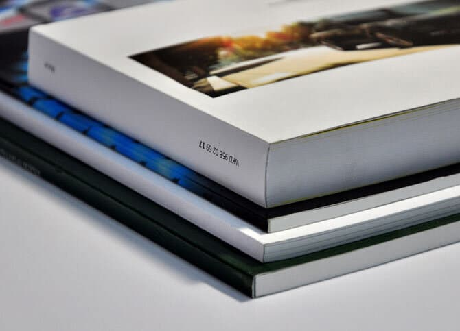
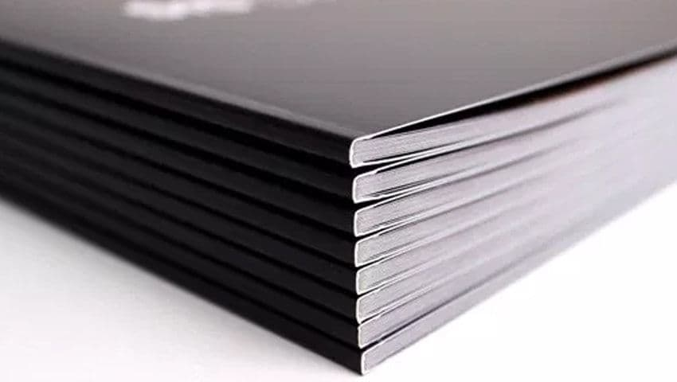
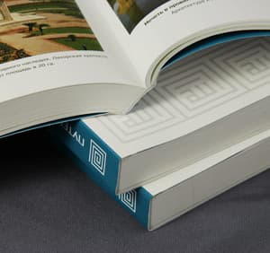

Одним из способов скрепления многостраничного полиграфического изделия (журналы, каталоги, брошюры, книги, дневники, блокноты и т.д.) является КБС. КБС – это способ скрепления изделия с использованием клея, но без использования шитья (клеевое бесшвейное скрепление). Такой метод подходит для изготовления брошюр и книг с мягкой обложкой толщиной корешка от 2 до 20 мм (рекомендуется технологом), а для изделий с толщиной корешка более 20 мм и бумагой плотности более 115 гр/кв.м рекомендуется метод КШС.

Технологический процесс КБС относительно несложный и включает в себя следующие этапы:

В издательско-полиграфическом комплексе «Лазурь» для данного способа скрепления используют машины КБС Pantera и Amigo производства немецкой компании Muller Martini, а для единичных экземпляров – Fastbinder. Машина КБС Pantera включает в себя листоподборочную линию, биндер Perfect и трехстороннюю резальную машину Esprit. Листоподборочная линия Pantera состоит из 10 станций по 2 секции на каждой, что позволяет подбирать блок из 20 листов одновременно (2-х, 4-х, 8-ми, 12-ти, и 16-ти страничные листы). Наклад листов осуществляется вручную. С листоподборочной линии блок подается автоматом в биндер. Здесь его захватывает каретка (их 12 на Pantera), с помощью которой блок передвигается к станции фрезерования и торшонирования, далее поочередно наносится корешковый и боковой термоклеи, и последняя операция биндера – присоединение обложки к промазанному клеем блоку и обжим. Далее изделие передвигается по транспортерной ленте к трехсторонней резке, где срезается три края кроме корешка. И выводится готовое изделие.

КБС Amigo включает в себя только биндер, для захвата здесь всего 4 каретки.
Скорость на КБС Pantera от 1000 до 4000 экземпляров в час, что позволяет оперативно осуществлять многотиражные заказы.
Для скрепления изделий на КБС Pantera и Amigo мы используем термоклей немецкого и российского производства. Рабочая температура клея составляет 160-180 ‘С.
Для изготовления изделий методом КБС лучше использовать бумагу: для обложки – 130-300 гр/кв.м; для блока: офсетную – 80-100 гр/кв.м, мелованную – 80-115 гр/кв.м. Для защиты обложки от повреждений при эксплуатации лучше использовать ламинирование (глянцевое, матовое, тач) или лакирование офсетное или уф с внешней (лицевой) стороны обложки. Если необходима более плотная бумага для блока: офсетная от 120гр/кв.м, а мелованная – от 130 гр/кв.м, рекомендуется более прочный вариант КБС – это КШС (клеевое швейное скрепление).
Клеевое швейное скрепление КШС – это метод скрепления изделия, при котором тетради в блоке сшиваются между собой нитями, а затем без использования фрезерования по технологии КБС проходят тот же процесс. В первую очередь этот способ подходит для изготовления книг в мягком переплете как более бюджетный по сравнению с твердым переплетом. Также такой способ рекомендуется использовать для изготовления изделий (журналов, каталогов, дневников, книг) из более плотной бумаги, а также при толщине блока более 20 мм (до 45 мм).